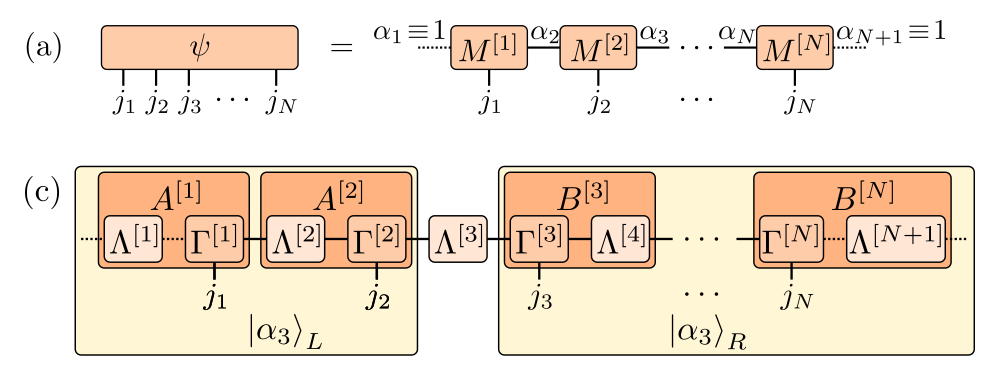
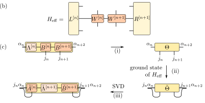
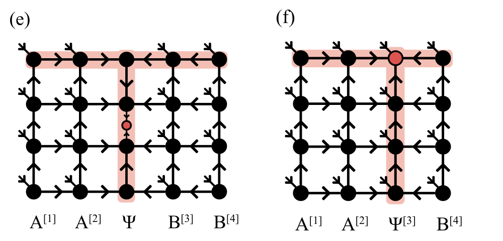
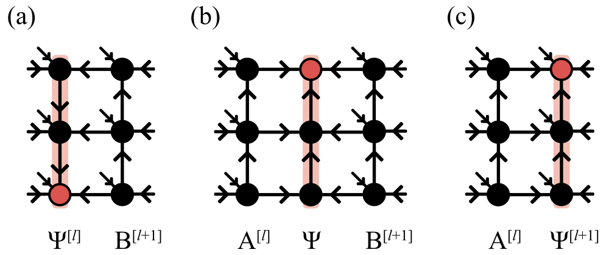

Numerics for quantum many-body systems
I develop and apply numerical methods to study quantum many-body systems, from model Hamiltonians to electronic structure in materials. Exact diagonalization, tensor networks, and density-functional theory provide complementary access to spectra, correlations, entanglement, dynamics, and transport. Benchmarks, symmetry, and convergence checks help establish which physical conclusions remain reliable as numerical approximations are varied.
Exact diagonalization
Exact diagonalization gives direct access to eigenstates, spectra, and time evolution of finite quantum systems. Symmetry sectors and sparse Krylov methods extend the accessible sizes and provide benchmarks for approximate approaches. For free fermions, quadratic structure offers a complementary route: single-particle correlation matrices encode Gaussian states and determine subsystem entanglement without constructing the full many-body wavefunction.
References
Density-matrix renormalization group (DMRG)
DMRG variationally optimizes a matrix product state to approximate the ground state of a quantum many-body system. Exploiting entanglement structure makes large one-dimensional systems and finite-width cylinders accessible, with accuracy controlled through bond dimension and convergence checks. The same MPS framework supports time evolution and correlation functions, connecting ground-state calculations with nonequilibrium dynamics and spectral response.

Matrix product states. Local tensors encode the wavefunction; the canonical form exposes Schmidt values and orthonormal blocks.
Figure sources
Figs. 3(a) and 4(c). Johannes Hauschild and Frank Pollmann. Efficient numerical simulations with Tensor Networks: Tensor Network Python (TeNPy). SciPost Physics Lecture Notes 5 (2018). Used under CC BY 4.0. Selected panels cropped from the original vector PDFs and arranged vertically. Original notation retained; lettering converted to SVG paths.

Two-site DMRG. An effective Hamiltonian optimizes neighboring tensors, which are split by an SVD before the sweep continues.
Figure sources
Fig. 8(b–c). Johannes Hauschild and Frank Pollmann. Efficient numerical simulations with Tensor Networks: Tensor Network Python (TeNPy). SciPost Physics Lecture Notes 5 (2018). Used under CC BY 4.0. Panels cropped from the original vector PDF. Diagram, arrows, and notation retained; lettering converted to SVG paths.
References
Isometric tensor-network states
Isometric tensor-network states (isoTNS) extend the canonical structure of MPS to two-dimensional networks. Isometry constraints simplify contractions, while Moses moves shift the orthogonality column to enable local updates. Ground-state optimization and TEBD² time evolution give access to correlations and dynamical structure factors. Exact representations of string-net states also connect isoTNS to long-range entanglement and topological order.

Isometric PEPS. A two-dimensional network with an orthogonality column between sites or on a column of physical sites.
Figure sources
Fig. 2(e–f). Sheng-Hsuan Lin, Michael P. Zaletel, and Frank Pollmann. Efficient Simulation of Dynamics in Two-Dimensional Quantum Spin Systems with Isometric Tensor Networks. Physical Review B 106, 245102 (2022). Used under CC BY 4.0. Selected panels retained from the original vector PDF, arranged side by side. Original notation retained; lettering converted to SVG paths.

Moses move. Splitting a column and recompressing it with its neighbor shifts the orthogonality column across the network.
Figure sources
Fig. 3. Sheng-Hsuan Lin, Michael P. Zaletel, and Frank Pollmann. Efficient Simulation of Dynamics in Two-Dimensional Quantum Spin Systems with Isometric Tensor Networks. Physical Review B 106, 245102 (2022). Used under CC BY 4.0. Original vector panels arranged horizontally. Original notation retained; lettering converted to SVG paths.
References
Density-functional theory (DFT)
Density-functional theory provides a practical route to the electronic structure of materials from their atomic composition and geometry. Combined with lattice-dynamical and electron–phonon calculations, it connects microscopic structure to vibrational stability, scattering, and transport.
-
Influence of hydrogen on electron-phonon coupling and intrinsic electrical resistivity in zirconium: A first-principles study
Physical Review B 99, 205152 (2019)
Using first-principles electronic-structure and lattice-dynamical calculations, we study electron–phonon coupling and intrinsic electrical resistivity across zirconium hydrides. We relate the anomalous resistivity decrease at high hydrogen concentration to the cubic-to-tetragonal structural transition. The distortion removes unstable phonon modes and weakens electron–phonon scattering, connecting changes in crystal symmetry to transport.